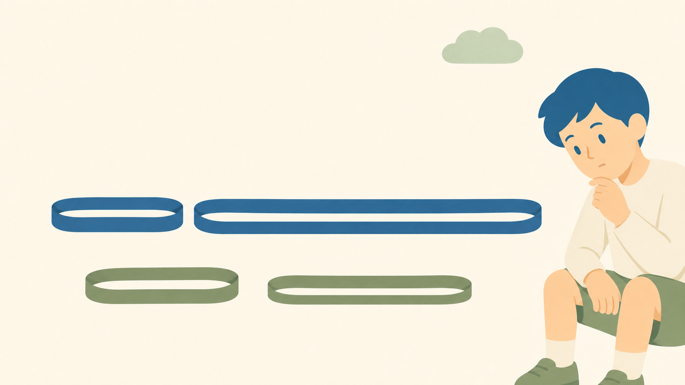

どっちが「よく」のびた？
小4算数「倍の見方（かんたんな割合）」の授業を、全国の先行事例から考えます。これは"正解の指導案"ではありません。「こう考えたら面白いかも」を集めた、授業づくりのヒント集です。

ここに並べた導入や手立ては、全国の先生・研究会・教育委員会・教科書会社が積み上げてこられた実践から学んだものです。参考にした実践には、本文中と末尾に必ず出典と元サイトへのリンクを付けました。指導案の文章はそのまま写していません（要約と、私自身の言葉で書いています）。児童・学校の内部情報は含みません。敬意を込めて、リンクから原典にあたっていただけたら嬉しいです。
4年生の「倍の見方」。これは、5年生で本格的に学ぶ割合の土台です。ここでつまずくと、割合がまるごと苦手になります。いちばんの山場は、「差でくらべる」から「倍でくらべる」への乗りかえ。2つの大きさをくらべるとき、これまでは引き算（差）でよかった。でも、もとの大きさがちがうと、差では公平に比べられない。この"納得"を、子ども自身にさせられるかどうかが勝負です。
この記事は、全国の指導案や実践、教科書会社の授業例をもとに、「面白い導入」と「倍でくらべる必要感の作り方」を並べたものです。どれが正解、という話ではありません。気になったものをつまんでもらえたらと思います。
01この単元の勘どころ
倍の見方とは、もとにする量を1とみたとき、くらべる量がいくつにあたるかを考えることです。ポイントは2つ。1つは「差」と「倍」の使い分け。もとが同じなら差でよいが、もとがちがうときは倍で比べる。もう1つが、「何をもとにするか」の判断。文章から「もとにする量」を読み取れないと、式が立ちません。ここが5年の割合まで響く急所です。
02面白い導入くらべ
導入のねらいは、「差ではうまく比べられない」場面をつくり、倍で比べたくさせることです。先行事例を型別に並べました。◎は個人的に「これは効く」と感じたものです。
タイプ1｜差と倍をぶつける
| おすすめ | 導入ネタ | 面白さのツボ | 出典 |
|---|---|---|---|
| ◎ | ゴムの伸びくらべ | もとの長さがちがう2本のゴムを伸ばす。差でくらべると片方、倍でくらべるともう片方が「よくのびた」になる。結論が食いちがうので、「どっち？ なぜ？」が生まれる。もとがちがうから倍で、に着地する。 | 東書Eネット 授業実践例 |
| ○ | 身長ののび くらべ | 「1年で10cmのびた弟」と「1年で10cmのびたお兄さん」。差は同じ。でも、もとの身長がちがう。どっちが「よくのびた」？ | 各実践 |
タイプ2｜テープ図で必要感を作る
| おすすめ | 導入ネタ | 面白さのツボ | 出典 |
|---|---|---|---|
| ◎ | テープ図だけ見せる | 数を出さず、長さのちがうテープ図だけ提示。「どっちがどれだけ大きい？」→数がほしくなる→「もとの何倍か」で見たくなる。倍の見方が子どもから出る。 | みんなの教育技術 |
タイプ3｜身近な「倍」から入る
- ねだん・大きさの「何倍」。「去年より2倍に増えた」「3倍の大きさ」など、生活で使う倍から入り、算数の言葉につなぐ。もとにする量を意識させる。
03「もとにする量」をつかむ手立て
- テープ図・二重数直線で「1」を見せる。もとにする量を1にそろえ、くらべる量がその何倍かを図で示す。式（くらべる量 ÷ もとにする量 ＝ 何倍）と図をつなぐ。
- 「何をもとにする？」を毎回問う。文章題で、まず「もとにする量」に線を引かせる。ここを外すと式が逆になる。
- 差の場面と倍の場面を並べる。「もとが同じなら差でよい」「もとがちがうなら倍」。両方を扱い、使い分けを意識させる。
- 実際にゴムを伸ばす。手を動かすと、「もとの長さで伸び方がちがう」が体で分かる。
04深く考える仕掛け
- あえて差と倍で答えが割れる数を出す。「差だとB、倍だとA」。どちらが「よくのびた」と言えるか、根拠をもって話し合う。
- 「公平に比べるには？」と問う。もとがちがうものを比べる公平さ＝倍、に気づかせる。
- 5年の割合へつなぐ。「もとにする量を1とみる」考えが、来年の割合・百分率の土台になることを、そっと予告する。
もとの大きさがちがうものは、差では公平に比べられない。だから、何倍かで見る。この単元の中心の考え
05生活とつなぐネタ
- 身長・体重ののび（もとがちがう人どうしのくらべ）。
- ねだんの値上がり・増え方（「◯倍になった」）。
- 拡大コピー（150%＝1.5倍）や地図の縮尺の入口。
- 5年「割合」へ。「もとにする量を1とみる」が、割合・百分率・グラフの土台になる。
06「こう考えたら面白いかも」1時間プラン例
もとの長さがちがう2本のゴムで、差と倍がぶつかる1時間に組んでみました。これが正解ではありません。（数の例：ゴムA もと10cm→30cm、ゴムB もと40cm→80cm。差はB＝40cmでBが大きい。倍はA＝3倍でAが大きい。）
8分
12分
13分
7分
5分
敬意を込めて。指導案・資料の本文は転載せず、要約と自分の言葉でまとめました。くわしくは各リンクから原典にあたってください。
（各サイトの内容・リンクは執筆時点のものです。リンク切れの際はご容赦ください。）
指導案・授業実践例（教科書会社・学校）
- 東京書籍 東書Eネット「（授業実践例4年）倍の見方」｜ページ ↗／「1とみたとき○にあたる〜倍の見方」｜ページ ↗
- 東京書籍 東書Eネット 教科書単元リンク集「倍の見方」｜ページ ↗
- 四万十市立中村小学校 第4学年 算数科学習指導案「倍の見方」｜PDF ↗
授業アイデア
この記事は、教科書会社・学校の公開資料と全国の授業アイデアをもとに、School Stock が要約・再構成しました。図はすべて自作です。教科書の本文・図版、児童の情報は含んでいません。